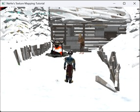
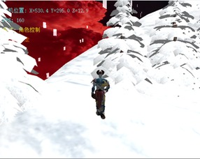
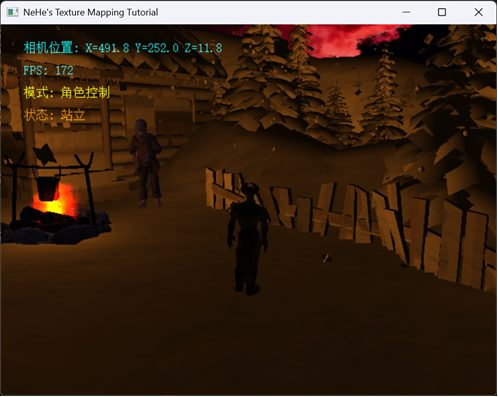
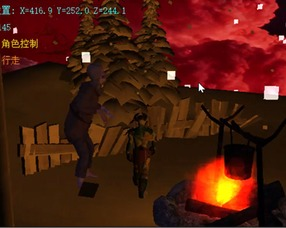
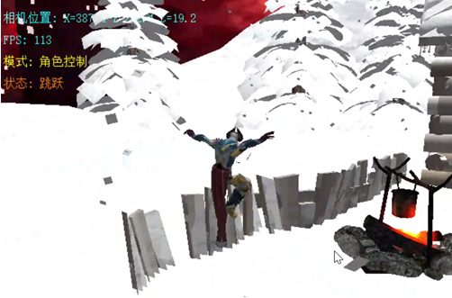
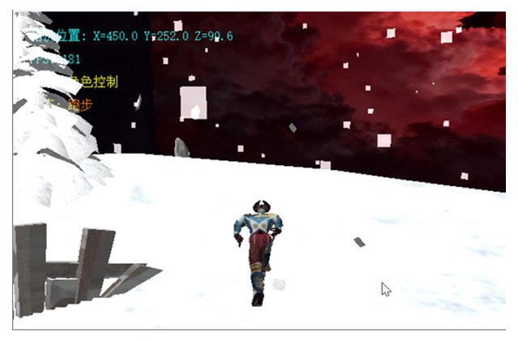
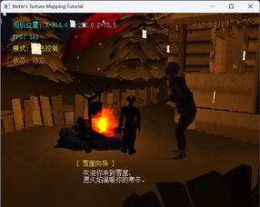

1. Overview
A 3D scene in which the user controls a Demon character walking through a blood-moon snowfield; snow falls continuously, and the character approaches a snow cottage, meets a witch and triggers an interaction. Built on the course's Lesson06 starter framework and extended with object-oriented model-management, camera and interaction classes.
- Scene & terrain: blood-moon skybox (six BMP textures replaced; PNG supported via stb_image.h); an FBX static model serves as the terrain; 3DS models load the witch and the campfire — dual pipelines to exercise different import techniques;
- Animated character: an FBX character with Mixamo skeletal animations, driven by a custom animation state machine (idle / walk / run / jump) with collision-based terrain following and a third-person follow camera;
- Interaction: DirectInput keyboard management; F4 toggles snowflake particle size; proximity triggers ray-cast detection and dialog text; L switches day/night lighting;
- Lighting & particles: a dedicated Light class (skybox constant, models shaded per mode); the campfire carries a distance-attenuated point light; a particle system renders the snowfall.
2. Screenshots







3. Problems & solutions
- Missing textures: added debug logging to the loading pipeline and traced the issue to skeletal-binding export settings;
- Coordinate-system unification: models from different sources used inconsistent units and axes — used an on-screen printtext() coordinate overlay to align everything;
- Version-control lesson: after losing a working state to an editing mistake, I adopted milestone archives for every major step.
The project consolidated my understanding of the rendering pipeline — environment setup, model handling, interaction design and debugging — through hands-on object-oriented graphics programming.